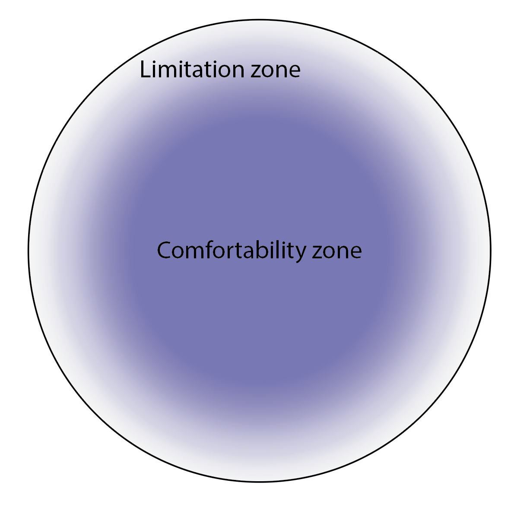

Generative AI
in research and coding
Week 8 lecture
Jelmer Poelstra
October 12, 2026
This week and next
This week
- Background of generative AI (genAI)
- GenAI at Ohio State and in this course
- Which genAI tools to use,
and how chat-based and agentic AI differ - Partial setup of Claude Code and
GitHub Copilot in VS Code
- What to use (and not use) genAI for
- Chat-based examples with Google Gemini
- Writing effective prompts,
and common pitfalls
Next week
- Use Claude Code to help with coding
- Let Claude act as an “agent”
- Give Claude persistent instructions
- Manage Claude’s context window and costs
Self-study content
- More Claude Code
Plan mode, skills, memory, guardrails - GitHub Copilot
Setup and use, including code completions
Anonymous survey: you and genAI
The Qualtrics survey has the following questions:
- What do you use genAI for (select from options)?
- Other genAI uses, if any.
- How often do you deliberately use genAI? (hourly/daily/weekly/rarely/never)
- Do you feel seriously conflicted about using genAI?
- Do you feel conflicted about using genAI for specific purposes?
- How do you think your genAI usage has affected your learning/productivity/work quality/independence/enjoyment?
- Which genAI tool/interface do you commonly use?
- Do you have a personal paid subscription to any genAI service?
- Complete the sentence: “I feel ____ about AI”.
Generative AI background
AI in biology and omics
While conventional machine learning (ML) is AI that has been around for decades and is commonly used in biology, deep learning, based on large neural networks, has taken off more recently:
1. Predictive deep learning
Predicts an answer for a given input, e.g.:
- DeepVariant calls DNA variants from sequencing data.
- AlphaFold 2 predicts 3D protein structure from sequence.
Also used outside of omics/bioinformatics, like image classification, e.g., characterizing soybean defoliation from drone images (Zhang et al. 2022).
2. Generative AI (genAI)
Creates new content such as text, images, code, proteins, and DNA. In biology:
- RFdiffusion designs new proteins.
- Evo 2 generates DNA sequences at scale.
Plant pathology example: design of new rice immune receptors that recognize pathogen proteins (Zhu et al. 2026).
AI hierarchy
Generative AI is built on deep learning, which is a subset of neural networks, which is a subset of machine learning, which is a subset of artificial intelligence.
(In the figure, GANs and LLMs are examples of genAI.)
- Large Language Models (LLMs) are the kind of generative AI that understands and generates text, including code.
Image by Gladstone Institutes
Large Language Models (LLMs)
LLMs have been extremely prominent since ChatGPT’s launch in late 2022.
In simple terms, LLMs such as ChatGPT aim to predict the next part of a word or phrase based on a user-provided text prompt.
— Cooper et al. (2024)
However:
Older models only looked at the last few words (e.g., early search autocomplete).
LLMs use an architecture called “transformers”, which considers the broader context:
the full input text and the output generated so far.
What’s in a name: ChatGPT
G = Generative
- The model creates new content.
P = Pre-trained
- It only knows about the data it was trained on.
- Anything after the training cutoff date is unknown to the model.
T = Transformer
- The architecture that lets it consider the broader context of the text.
Beyond the training data
Many genAI tools can also use information outside of their training data, such as a file you upload or web search results, by adding it to the input text.
This has become much more common in the last few years: many tools now automatically search the web when a question is about recent events.
How LLMs are trained
1. Pre-training
- Learn to predict the next word from huge amounts of text (web, books, code).
- The model knows a lot, but can’t yet answer questions or follow instructions.
2. Post-training
- Train on example conversations.
- “Reinforcement learning”: reward good answers, as rated by humans or checked automatically.
- The model now follows instructions and acts as an assistant.
Why this matters
- Human ratings reward answers people like, which is one cause of LLM sycophancy (Sharma et al. 2023).
- Automatic checks work especially well for code: one reason why LLMs are particularly strong at coding.
Tokens and the context window
Tokens
- LLMs read and write tokens, not words: pieces of words, roughly ¾ of a word each.
- Usage limits and costs are counted in tokens.
Context window
- The maximum number of tokens a model can consider at once: its “working memory”.
- Includes everything in the conversation: all your prompts, uploaded files, and the model’s responses.
Performance degrades with conversation length
Answers get worse well before the context window is full: e.g., information in the middle of a long conversation tends to get “lost”. Once it is full, older parts are dropped or summarized.
Start a new chat for each new task — and even within a task, once a conversation gets long.
Making sense of model names
A model name like Claude Sonnet 5.5 combines three “levels”:
1. Company
Each company makes its own models. The three at the frontier:
- Anthropic: Claude
- OpenAI: GPT
- Google: Gemini
2. Tier
Companies offer different models — for Claude:
- Haiku: small, fast, cheap
- Sonnet: mid-size
- Opus: very capable,
but slower and pricier - Fable: top tier, very pricey
3. Version
Each tier is updated regularly:
E.g., Claude Opus in 2026: 4.6 → 4.7 → 4.8 → 5 → 5.5.
Each update is generally an improvement.
Tool ≠ model: chat tools often let you pick a model, and some tools use another company’s models.
For example, the tool Microsoft Copilot mainly runs OpenAI’s GPT models.
“PhD-level intelligence”?
A 2025 AI-generated alphabet poster
by Maria Sukhareva.
“How many n’s are in the word unconventional?”
“How many b’s are in the word blueberry?”
Note, e.g., the discrepancy between the two answers.
A fast-moving field
- Striking failures like those on the previous slide (from 2025) are often fixed in the next version.
So, any impressions of what genAI can’t do may quickly become outdated!
- You should also consider the so-called “jagged frontier” of genAI:
you can’t generalize its performance or intelligence based on very bad or very good examples.
- Not all problems have seen quick resolution: e.g., that of making things up (“hallucinations”).
Still, why couldn’t it count letters?
What LLMs actually see are tokens converted to numbers, so the individual letters are invisible to them.
To see how text is split into tokens, paste “unconventional” and a DNA sequence like
ATGGCGTTAGCCATTAGCinto a tokenizer . Click “Token IDs” to see the numbers the model receives.As applied to omics: don’t ask a chat AI to count bases or reverse-complement a sequence by reading it. Ask it for code that does this, or to run non-AI tools that do it.
Video: Large language models explained briefly
Ohio State genAI adoption
Ohio State goes all-in
Ohio State is one of a number of universities that have embraced genAI in education:
Ohio State is leading a bold, groundbreaking initiative to integrate artificial intelligence into the undergraduate educational experience. The initiative will ensure that every Ohio State student, beginning with the class of 2029, will graduate being AI fluent — fluent in their field of study, and fluent in the application of AI in that field.
Your experiences
What have you noticed of this initiative?
More broadly, in your other courses:
- What have you been taught about AI?
- What kind of policies have been in place?
A Nature News Feature
Last year, Nature published a News Feature about genAI adoption at universities :
Pearson (2025)
A Nature News Feature
At Ohio State University in Columbus, students this year will take compulsory AI classes as part of an initiative to ensure that all of them are ‘AI fluent’ by the time they graduate.
But many education specialists are deeply concerned about the explosion of AI on campuses: they fear that AI tools are impeding learning because they’re so new that teachers and students are struggling to use them well. Faculty members also worry that students are using AI to short-cut their way through assignments and tests, and some research hints that offloading mental work in this way can stifle independent, critical thought.
How do these numbers compare to our poll?
GenAI in this course and in your research
In this course
From this week on, you’re allowed to use genAI for all graded course components.
But you must always be able to explain your reasoning and code, and document how you used genAI.
In your research
- Many journals require you to disclose genAI use, and genAI can’t be an author.
GenAI output is not reproducible: the same prompt can give a different answer next time, and models are updated and retired.
So save the output you actually use: saving only the prompt is not enough to get it back. (And for disclosure, note which tool you used and for what.)
Which genAI tools to use
Why use genAI through Ohio State?
Ohio State provides access to several genAI tools.
Whenever you can, you should use these rather than personal accounts, because of:
Data privacy
Your data is handled according to Ohio State’s policies.
So you can share data up to the highest level, “S4: Restricted” (see OSU’s data levels ), which includes your unpublished research data.
(Though not approved for regulated data, such as HIPAA patient data.)
Access
You get access to more advanced models with higher usage limits (at least compared to free personal accounts).
All these tools are only approved when you use them through OSU, i.e., by logging in with your OSU credentials.
Ohio State approved genAI tools
Browser- and app-based tools
Ever-changing list, but currently includes:
- Google Gemini (we’ll use this here)
- Microsoft Copilot
- Adobe Express and Firefly for design and image generation
- Google Colab: Python (or R) notebooks in the browser with Gemini
API access
OSU’s GenAI Service provides “API keys” to access many different models.
With an API key, you can use models within other software, like within Claude in VS Code (next lecture).
Unlike the chat tools, and unlike personal subscriptions, this is pay-per-use: every request costs money.
Do you use these tools, or do you prefer something else? Does anyone have a personal subscription?
Using genAI inside your IDE
For coding tasks, it’s highly beneficial to use genAI directly inside your IDE, like VS Code:
Modes of interaction
- Code completions
Suggestions in the editor as you type. - Chat with “agentic” capabilities
The model can perform actions like editing files and running commands.
Benefits
- Automatic awareness of your files.
- Less copy-pasting in both directions (e.g., you can simply “accept” suggestions).
- An agent can try its own suggestions and fix its own mistakes in a feedback loop.
- Persistent memory across sessions, e.g., via instruction files saved in your project.
AI agents are convenient and powerful, but that also makes them potentially dangerous.
From chat to agents
With the example task of troubleshooting an error:
Chat AI
Agentic AI
What it can see
Only what you paste or upload
Your project files, your environment, output of commands it runs
From chat to agents
With the example task of troubleshooting an error:
Chat AI
Agentic AI
What it can see
Only what you paste or upload
Your project files, your environment, output of commands it runs
What you need to tell it
Error message, your OS, program versions, extensive context
Error message, less context
From chat to agents
With the example task of troubleshooting an error:
Chat AI
Agentic AI
What it can see
Only what you paste or upload
Your project files, your environment, output of commands it runs
What you need to tell it
Error message, your OS, program versions, extensive context
Error message, less context
Workflow
You run the code and paste errors back, back-and-forth between you and the AI
Agent runs the code, reads the errors, fixes them, and retries (loops) until done
The agentic loop
An agent can work in a loop of “tool calls” (reading files, running commands, editing files)
until it considers the task done:
Image from the Claude Code docs
Running LLMs locally
Cloud-based
All the options so far are cloud-based.
Each request goes to the provider’s servers, where the models are hosted and run.
The models we’ve discussed are proprietary and not available for download.
Local
Open-weight models like DeepSeek and Llama can be downloaded and run locally.
Small models can run on personal computers; OSC can run larger ones (on GPU nodes).
Beyond compute costs, usage (“inference”) is free.
Less capable than frontier proprietary models, but not necessarily by much.
We may explore local models at OSC later in the course. OSC is working on setting up a permanently running model, and may offer us some test usage very soon. See osc.edu/AI for current options.
Results of our survey
Recurring themes:
- Environmental concerns
- Incorrect information and hallucinations
Tool setup intermezzo
Claude Code vs. GitHub Copilot
A number of tools can provide genAI assistance inside your IDE.
Two of the most prominent are Claude Code and GitHub Copilot, and we can use both inside VS Code. However, there are some important differences between the two:
| Feature | GitHub Copilot | Claude Code |
|---|---|---|
| Code completions | ✅ | ❌ |
| Agentic chat | ✅ | ✅ |
Claude Code vs. GitHub Copilot
A number of tools can provide genAI assistance inside your IDE.
Two of the most prominent are Claude Code and GitHub Copilot, and we can use both inside VS Code. However, there are some important differences between the two:
| Feature | GitHub Copilot | Claude Code |
|---|---|---|
| Code completions | ✅ | ❌ |
| Agentic chat | ✅ | ✅ |
| Some free use with a personal, “academic” account | ✅ | ❌ |
| Can be paid for with university funds | ❌ | ✅ |
| Approved for use with institutional data | ❌ | ✅ |
Claude Code vs. GitHub Copilot
A number of tools can provide genAI assistance inside your IDE.
Two of the most prominent are Claude Code and GitHub Copilot, and we can use both inside VS Code. However, there are some important differences between the two:
| Feature | GitHub Copilot | Claude Code |
|---|---|---|
| Code completions | ✅ | ❌ |
| Agentic chat | ✅ | ✅ |
| Some free use with a personal, “academic” account | ✅ | ❌ |
| Can be paid for with university funds | ❌ | ✅ |
| Approved for use with institutional data | ❌ | ✅ |
| Often considered the best AI coding tool | ❌ | ✅ |
In class, we’ll use Claude Code. But we’ll enable GitHub Copilot and apply for its student plan now, because access only starts 72 hours after approval. Then, you can try it with the self-study page.
Initial Claude Code setup in VS Code
- In the Extensions side bar, search “claude” to find the “Claude Code for VS Code” extension.
- Click Install, then affirm you trust the publisher.
- Open the “secondary side bar” by clicking the highlighted icon in the top-right:


Initial Claude Code setup in VS Code
- In the Extensions side bar, search “claude” to find the “Claude Code for VS Code” extension.
- Click Install, then affirm you trust the publisher.
- Open the “secondary side bar” by clicking the highlighted icon in the top-right:
- Does the side bar show something like this screenshot?

Connect Claude to your API key
You’ve received a personal API key from us, giving you access to Claude models through OSU’s Generative AI Service. To tell Claude to use your key, create a settings file in your Home dir:
Copy a template settings file to that location:
- Open your copy of the settings file in the editor.
Check that Claude Code works

If your Claude Code panel looks like this,
authentication likely worked.


Initial GitHub Copilot setup in VS Code
At OSC, GitHub Copilot is disabled by default in VS Code, so you need to enable it:
- Open the Settings ( > Settings) and enter “
chat.disableAIFeatures” in the search bar.

Initial GitHub Copilot setup in VS Code
At OSC, GitHub Copilot is disabled by default in VS Code, so you need to enable it:
Open the Settings ( > Settings) and enter “
chat.disableAIFeatures” in the search bar.Click on the “
Remote [ondemand.osc.edu]” tab header.

Initial GitHub Copilot setup in VS Code
At OSC, GitHub Copilot is disabled by default in VS Code, so you need to enable it:
Open the Settings ( > Settings) and enter “
chat.disableAIFeatures” in the search bar.Click on the “
Remote [ondemand.osc.edu]” tab header.Uncheck the box next to “
Chat: Disable AI Features”.

Initial GitHub Copilot setup in VS Code
At OSC, GitHub Copilot is disabled by default in VS Code, so you need to enable it:
Open the Settings ( > Settings) and enter “
chat.disableAIFeatures” in the search bar.Click on the “
Remote [ondemand.osc.edu]” tab header.Uncheck the box next to “
Chat: Disable AI Features”.Now, the secondary side bar with Claude should also have a “
CHAT” tab. Click that and the side bar should show something like the screenshot on the right.

Apply for GitHub Copilot student benefits
As a student, you can get extended free access to GitHub Copilot via the Student plan (see the course’s Copilot page for more). To apply:
Click “Start an application”:

- Fill out the form as needed. (You may need a document that proves your current status at the university.)
Application approval is often quite fast (sometimes in minutes), but access is only granted 72 hours after approval. You can already sign in and use the Free plan in the meantime.
Applications in omics data analysis
“AI in research” can mean very different things
Specialized non-generative models (most machine learning / deep learning)
Doing a specific task — e.g., AlphaFold 2 and DeepVariant from earlier.Biological generative models
Creating new DNA or proteins rather than text — e.g., RFdiffusion and Evo 2 from earlier.
LLMs that run other tools
An agent that runs other programs, which may or may not use AI themselves. E.g., Claude designing protein binders by running RFdiffusion and similar programs (Claude Science and Shanehsazzadeh 2026).LLMs doing (most of) the work themselves
E.g., extracting data from papers, interpreting results like a list of significant genes. Or Claude finding a new family of enzymes by spotting unusual repeats in phage DNA (Yoon et al. 2026).
- LLMs helping you write and run code
The focus of this course.
What should you (not) use genAI for?
Good uses
- Tasks where you can check the result without excessive effort.
- Tedious tasks you know how to do: documentation, reformatting, repetitive work.
- Learning, when you use it as a tutor (explain, give examples, quiz me).
Be careful with
- Tasks where you can’t judge the output.
- Numbers and conclusions that the AI reports directly, rather than code you can rerun.
- Replacing your own learning, especially when building new skills (Lenharo 2026).
- Sensitive data without proper protection/approval.
See also
- This week’s other required reading (King et al. 2026):
“Ten Simple Rules for Effective Use of Generative AI for Code Development in Environmental Science”. - University guidelines and departmental policies are linked to on this week’s overview page.
Example use cases of genAI
Not code-related
- Explain concepts & methods
- Find programs to do a task
- Summarize papers and search the literature
- Explain results that you got
- Think about next steps
- Give feedback on your writing
Code-related
- Write code from scratch
- Explain or document code
- Debug or optimize code
- Explain error messages
- Turn code into a pipeline, “package”, or software
- Translate code between languages
Partly based on Dewar (2026)
Anything else?
GenAI and expertise


Why might AI make experienced doctors better, but doctors-in-training worse?
Does the same apply to our fields, and to coding?
GenAI and expertise

The most important skill in prompting is expertise in the domain you’re prompting for.
— Sean Goedecke , “LLMs reward expertise”
Experts ask better questions, spot wrong answers, and steer AI toward better solutions.
Beginners often can’t tell when it’s wrong.
- Arguably, genAI makes expertise in your field and basic coding skills more rather than less important.
Examples with Google Gemini
Signing in to Google Gemini
Go to https://gemini.google.com.
Click “Sign in” and sign in with your Ohio State email address (
name.#@osu.edu) —
you’ll be sent to the OSU login page.

While you can chat right away, you need to sign in (top right)
to enable OSU’s data protection and access the more advanced models and features.
Signing in to Google Gemini
Go to https://gemini.google.com.
Click “Sign in” and sign in with your Ohio State email address (
name.#@osu.edu) —
you’ll be sent to the OSU login page.

Now you’re signed in.
Picking a model
- You can choose between three models in the dropdown in the prompt box.
- Unlike Claude’s models, these don’t form a simple scale from “fast-but-weak” to “slow-but-strong”. Roughly:

| Model | Mode | What it is | Notes |
|---|---|---|---|
| 3.6 | Flash | Quick answers | Fast; fine for most everyday questions |
| 3.6 | Thinking | Reasons longer first | Slower, but better at complex, multi-step problems and self-correction |
| 3.1 | Pro | Older, larger model | Slower, but strong on expert-knowledge questions; older training data |
Standard chat, Deep Research, and Notebooks
Standard chat
- Answers within seconds (Flash) or perhaps a minute (Thinking).
- Good for coding-related questions and many other fairly specific questions.
Deep Research
- Works for several minutes, searching and reading sources, then producing a report with citations.
- Good for literature over-
views and comprehensive tool/method comparisons.
Notebooks
- You collect sources for a project in one place.
- Its answers are based on those sources, so you don’t have to re-upload or re-explain.
There is also a dedicated “Students” option. This has some presets like quizzes and flashcards. However, asking for these things in a normal chat seems to give equivalent responses.
Finally, there are image generation capabilities we won’t discuss further.
Gemini interface
Chats, Students, and Notebooks are in the left panel:


More on literature summary and search
Gemini Notebook (NotebookLM)
- You upload documents like papers and ask questions about them: answers are based on these sources, with citations to specific passages.
In constant, confusing flux: recently renamed from “NotebookLM” to “Gemini Notebook”, and now partially integrated with “plain” Gemini’s Notebook option.
At https://notebook.google.com but also linked to from “plain” Gemini.
Google Scholar Labs
- AI-powered search in Google Scholar:
ask a research question in plain language, and it finds relevant papers and explains how each relates to your question.
Access to full text is an issue
- Many papers are behind paywalls, and can’t be read by the AI.
- Gemini Notebook avoids this, because you upload the papers yourself.
- Many commercial services exist (some with free tiers), like Consensus. Some universities have licenses for these, but OSU does not.
Breakout rooms
On your own (5–10 min), try at least one of these in Gemini:
- Deep Research
Ask a question relevant to your own research or the suggested question. - Ask about a topic you know a lot about (like your research niche or a hobby)
Ask increasingly specific questions. Does it start getting things wrong at some point? - Ask about a concept from this course you’ve struggled with
Ask for an explanation, a quiz, or tips. - Ask about a program or command option
One you’ve looked up yourself in this course, or the suggested TrimGalore question.
Then discuss takeaways in your group (5+ min), such as:
- Any lessons learned in terms of prompting, choosing a model, or using the tools?
- Did you catch any mistakes, and how might that relate to your level of expertise?
- Feel free to discuss other AI-related experiences, or topics from the lecture, too.
Option 1: info and possible prompt
Any Deep Research prompt will probably take a few minutes to run, so you can get one started and then try one of the other options while you wait.
If you have no inspiration, here’s a suggested prompt:
“Compare TrimGalore, fastp, and Cutadapt for trimming Illumina RNA-seq reads. Which are most used in recent publications, and what are their pros and cons?“
Once the report is done
Pick one of its citations: does the source exist, and does it actually say what the report claims?
Option 3: possible prompts (1/2)
On this slide are some possible regular chat prompts, whereas the next slide will get Gemini to create interactive items like quizzes for you.
Either way, modify as needed to ask about something you’d actually like to learn more about. You can optionally also compare responses between Flash and Thinking models — would you expect large differences for these kinds of questions?
What does the following command do?
gunzip -v garrigos/ref/*
What does
set -euo pipefaildo at the top of a shell script?
Why should I put double quotes around variables in bash, like
"$file"instead of$file?
I don’t really understand how the pipe works.
For example, why doesgrep "cecropin" | zcat annot.gtf.gzfail?
Option 3: possible prompts (2/2)
These kinds of questions, whether asked in the regular chat or with the “Students” option, should make Gemini create interactive items:
I am confused about using paths in the Unix shell, especially relative paths with
..and../... Quiz me on this topic to help me understand it better.
I struggle to understand the pipe in bash. I’m coming at this as a biologist learning the shell for data analysis. Quiz me on this topic to help me understand it better.
I’m a biologist learning to use the Unix shell for omics data analysis. Can you give me one tip at a time, with an example and present buttons for me to mark tips as too hard / too easy / great / off-topic?
Option 3: example screenshot

Option 4: A possible prompt
Newer Illumina sequencers (e.g., NextSeq) use two-color instead of the older four-color chemistry. This can lead to erroneous stretches of G’s at the end of reads that should be trimmed off. The trimming tool TrimGalore has option --nextseq (alias --2colour) for reads from two-color chemistry runs. Last year in this course, when asked:
How to tell TrimGalore that reads use Illumina two-color chemistry?
Microsoft Copilot hallucinated a --polyG option that didn’t exist at the time:

Try this prompt in separate “Flash” and “Thinking” chats
Twist: TrimGalore v2, released this year, added a separate --poly_g option that differs from the --nextseq option.
Tips and pitfalls
Writing effective prompts
General advice
- Break bigger problems down into smaller ones.
- When you know what you want, be specific and detailed, e.g., about formats and programs
(but sometimes you want to explore your options and be less specific).
For certain larger or more complex tasks, consider including details on:
- Context — Who you are (or “who the AI is supposed to be”) and what you’re working on
- Task — What specifically you want the AI to do
- Format — How you want the output structured
- Constraints — Any limitations, requirements, or things to avoid
- Examples — Sample inputs/outputs
Building up a prompt
Task:
Write a Bash script that counts the number of reads in a FASTQ file.
+ Context & constraints:
[…] The file is gzip-compressed, and its name should be an argument to the script. Only use standard Unix tools.
+ Format & example:
[…] Print file name and read count separated by a tab:
sampleA_R1.fastq.gz 250000
Many AI answers are poor because the AI doesn’t know your file names, column names, or software.
AI inside your IDE can see these, which is a big advantage.
“Prompt enhancer” phrases
Explanation
- Explain with examples
- Explain as if I’m a high school student
Clarification
To make it less likely that the model makes stuff up:
- Ask me clarifying questions
- If you’re not sure about something, say so rather than guessing
Verification
- Show me the specific quotes from the papers that support each of these conclusions
- Which parts of this are you least sure about?
- How can I check that this code does what I want?
Pitfalls I
Hallucinations
Models make things up, e.g.:
- Invented commands, options, functions, or data columns.
- Example code and its output — unless the AI actually ran the code, that output is just a prediction.
“Jagged frontier”
Models are very good at some tasks but fail surprisingly at others.
The frontier keeps moving, so past experience doesn’t tell you which tasks will fail.
“0-to-90% problem”
GenAI often gets you most of the way, but not all the way.
Finishing the task takes expertise — which is harder when you didn’t do the first 90% yourself.
Pitfalls II

Figure by Hannah Toth
- Comfort vs. limitation zone
- Models do well with common knowledge (e.g.,
grep; referenced millions of times in training data) - But hallucinate more with niche or new topics, especially when no clear documentation can be found with an online search.
- Models do well with common knowledge (e.g.,
- Confidence ≠ correctness
Models sound equally sure when making things up.
- Sycophancy
Models tend to tell you what you want to hear.
Ask “What could be wrong with this script?” rather than
“I think this is correct, do you agree?”.
Pitfalls III: “Narrative-flipping”
What is narrative-flipping?
When challenged on an answer, like a narrative explaining a set of results, a model may flip to a completely different narrative.
Maddeningly, evidence previously interpreted to support one answer may be re-interpreted to support a completely different answer.
- Causes include sycophancy and premature commitment due to how text is generated one token at a time. Once it goes in a certain direction, its bias is to justify that further (Zhang et al. 2023).
To avoid narrative-flipping
Facts before conclusions: first ask only for the evidence and arguments on all sides.
Competing explanations: have the model build several mutually exclusive explanations and weigh the evidence for each before picking one.
Pre-empt caving: tell the model not to change its answer when challenged, unless you provide new facts.
Second opinion: start a new chat or use another model, rather than pushing back in the same chat.
Side note: Two upcoming events
Part of the “Demystifying Research” series hosted by the OSU Libraries Research Commons
AI in Research: Responsible and Effective Use for Graduate Students
Tue Nov 10 from 12–1 pmReproducibility Made Realistic
Tue Oct 27 from 12–1 pm
By Kelsey Badger (Research Commons), Matt Thompson (Imageomics), and myself.
Questions?
Click here to go to the next lecture, Coding with an AI agent in VS Code